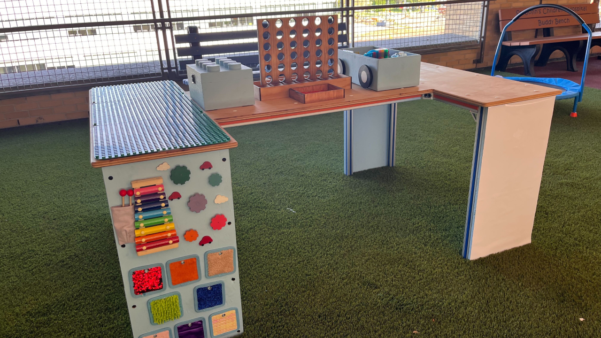
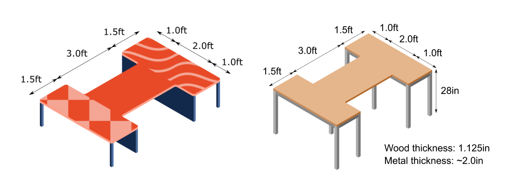

Back to Projects

CMN Table is a project under MedLaunch UIUC - a Registered Student Organization that aims to design for accessibility. Over the 2022 - 2023 school year, our project team designed and built a wheelchair-accessible playtable for a children's hospital.
As a team, we decided on the Block I shape since the reduced width in the centre of the table would allow for easier collaboration. Additionally, we wanted to make the playtable as engaging as possible through the provision of a wide variety of games and activities to engage kids with different interests!

One of my main contributions came in the form of creating several drafts of the table designs in Inkscape, for easier visualisation. The choice of vector graphics was in order to make full use of an isometric grid to allow for accurate proportions at a clear three-quarters angle.
Afterwards, I also provided 3D visualisations in Blender (for generic structure) and Fusion 360 (for the assembly of specific 80/20 aluminium extrusions).
For the final product, I helped out mainly with the physical assembly of the aluminium frame and side panels, but through the process I have also gotten trained and used the tablesaw, bandsaw and other tools for prototyping!
Shoutout to the amazing CMN Table project team and MedLaunch UIUC for making my experience here such a fun and meaningful one! :D